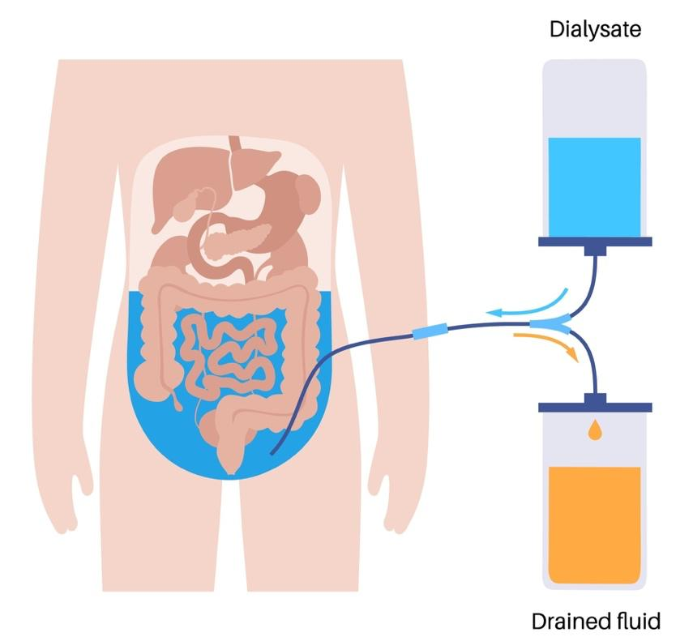
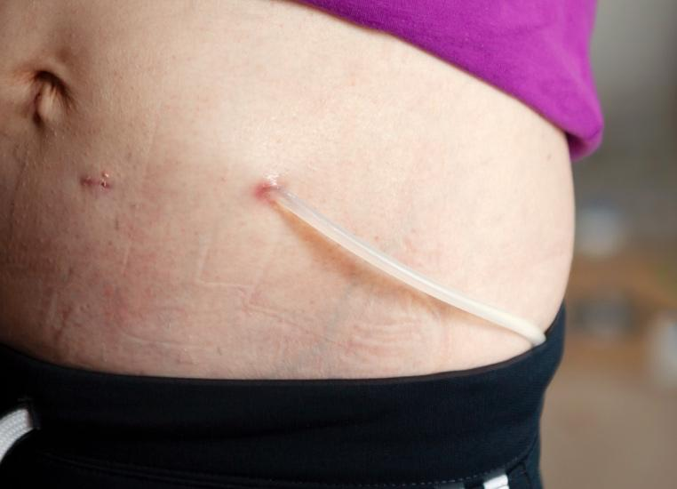

Your kidneys remove waste and extra water from your body. When they stop working well, waste can build up and make you sick. You need medical support to clean your blood. Peritoneal dialysis, also called PD, is one way to do this job.
PD is needed if you have kidney failure, also called end-stage renal disease or ESRD. Peritoneal dialysis can be done at home, at work, or even on vacation. It gives you more freedom than going to a dialysis center.

PD filters your blood using healthy cells in the lining of your belly. This lining is called the peritoneum, and it is found all around your organs.
A small tube called a catheter is placed in your belly. Fluid called dialysate flows into your belly through the tube. The dialysate pulls waste and extra fluid from your blood through your belly lining. After a few hours, you drain the used fluid and put in fresh fluid.
PD is safe. It can be done at home, on the go, or even while sleeping. You will be trained on how to do it.
There are 2 types of PD. Your care team can talk about both options to help you decide what is right for you.
You do the dialysis yourself, 3 to 5 times a day.
Each time, the new fluid stays in your belly for a few hours.
You do not need a machine.
You can move around during the day.
A machine does the work while you sleep.
It fills and drains the fluid for you through your catheter.
You are connected to the machine for 8 to 10 hours each night.

Wash hands often: This helps prevent infection. Wear sterile gloves when you touch the catheter.
Clean your catheter site daily: Regular cleaning lowers the chance of infection.
Use antibiotic cream: Put antibiotic cream on the skin around the catheter with a cotton-tip swab every time the dressing is changed. This will help prevent infections. Do not use any creams with petroleum because they can damage the catheter.
Eat kidney-friendly foods: Your care team or dietitian will help you choose foods that keep your body balanced. You will likely have to limit sodium, potassium, and phosphorus.
Drink the right amount of fluids: Too much fluid can harm your heart. Your care team will guide you.
Take medicines as told: They help control blood pressure and prevent problems.
Stick to your schedule: Doing PD at the same time each day helps it work best.
Keep track of your fluid: Write down how much goes in and how much comes out.
Weigh yourself daily: This is an important way to track how well the PD is working. Sudden weight gain can be a sign of trouble.
Store supplies safely: Keep your dialysis items in a clean, dry space.
Limit lifting and bending: Protect your catheter from being pulled or damaged.
Tell your care team about travel: You can travel with PD but may need extra planning.
Keep all care team appointments: Regular checkups help prevent problems.
Blood tests may be needed: These check if the dialysis is working.
Your care team may adjust your plan: As your needs change, your PD schedule might change too.
Ask questions: You are a key part of your care.
It is normal to feel nervous or sad when starting dialysis. You are not alone. Your care team is here to help you learn and feel more confident. You can also talk to other people who use PD or join a support group.
Call your care team if:
Your used dialysis fluid is cloudy or has an odd color.
You have redness, swelling, pain, warmth, or pus around your catheter site. These are signs of infection.
You have a fever of 101°F or 38.3°C or chills.
You have mild to moderate belly pain or discomfort that does not go away.
You have trouble doing your treatments.
You have new swelling or shortness of breath.
Nausea or vomiting lasts more than a few hours.
You have trouble sleeping, confusion, or problems concentrating.
You are not able to pass gas or have a bowel movement.
You have any questions or concerns about your symptoms or your dialysis treatment.
Get help right away if:
You have severe belly pain or tenderness that comes on suddenly or gets much worse.
You have severe swelling of your belly, which may feel hard or rigid.
You have a fever of 102°F or 38.8°C or higher with shaking chills, and you feel very sick, especially if your dialysis fluid is cloudy.
You have a fast heart rate or low blood pressure.
You have trouble breathing, chest pain, or shortness of breath.
You have confusion, fainting, or sudden trouble staying awake.
Thank you for trusting us with your care. We are here to support you and want you to feel your best. Contact us with any questions.
IF YOU HAVE A MEDICAL EMERGENCY, CALL 911 OR GO TO THE EMERGENCY ROOM.
The information presented is intended for general information and educational purposes. It is not intended to replace the advice of your health care provider. Contact your health care provider if you believe you have a health problem.
Last updated May 2025
© 2025 Mytonomy, Inc. All rights reserved.